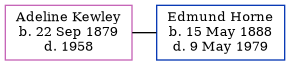

Adeline Janet Horne (née Kewley) 1879 - 1958
[ Home ] | [ Calendar ] | [ Surnames Index ] | [ Errors ] | [ Family History ]Adeline Kewley, the wife of Edmund Horne (the great-uncle of Nigel Horne), was born in Lezayre, Ayre, Isle of Man on 22 Sept 18791,2. She married Edmund at Anglican Saint Martin, Montreal, Quebec, Canada on 4 Jun 19133.
During her life, she was living at Board School, Lezayre, Isle Of Man on 3 Apr 18814; in Quebec in 19015; in St Antoine, Quebec in 19111; and in Saint-Hubert, Longueuil, Quebec on 1 Jun 19212. She arrived in Canada in 1903.
She died in 1958 in Canada and was buried at Les Jardins Commémoratifs Lakeview Memorial Gardens, Quebec after 1958.
Citations
- 1911 Census of Canada Online publication - Provo, UT, USA: Ancestry.com Operations Inc, 2006. .Original data - Library and Archives Canada. Census of Canada, 1911. Ottawa, Ontario, Canada: Library and Archives Canada, 2007. http://www.collectionscanada.gc.ca/databases/census-19 (Marital Status: Single; Relation to Head of House: Domestic)
- 1921 Census of Canada Ancestry.com Operations Inc (Marital Status: Married; Relation to Head of House: Wife)
- Quebec Vital and Church Records (Drouin Collection), 1621-1967 Online publication - Provo, UT, USA: Ancestry.com Operations Inc, 2008.Original data - Gabriel Drouin, comp. Drouin Collection. Montreal, Quebec, Canada: Institut Généalogique Drouin.Original data: Gabriel Drouin, comp. Drouin Collection. Montreal, Quebec,
- 1881 England, Wales & Scotland Census - Findmypast (was age 1 and the daughter of the head of the household)
- Canada Census 1901 - Findmypast (was a domestic in the household)
Media
Adeline Janey Kewley - headstone

1881 England, Wales & Scotland Census - GBC/1881/0025968893
Canada Census 1901 - CAN/CENSUS/1901/04374196
Family Tree
Map
Generated by ged2site. Last updated on Jul 3, 2024
Known Issues
Death date (1958) has no citations
Burial place (Montréal, Québec, Canada) has no citations
No records of living with anyone
Adding date of burial as 'aft 1958'
Census information missing between Census UK 1881 and Canada Census 1901 - Findmypast
Unknown birth country: 'Isle Of Man' in 'Lezayre, Ayre, Isle of Man'